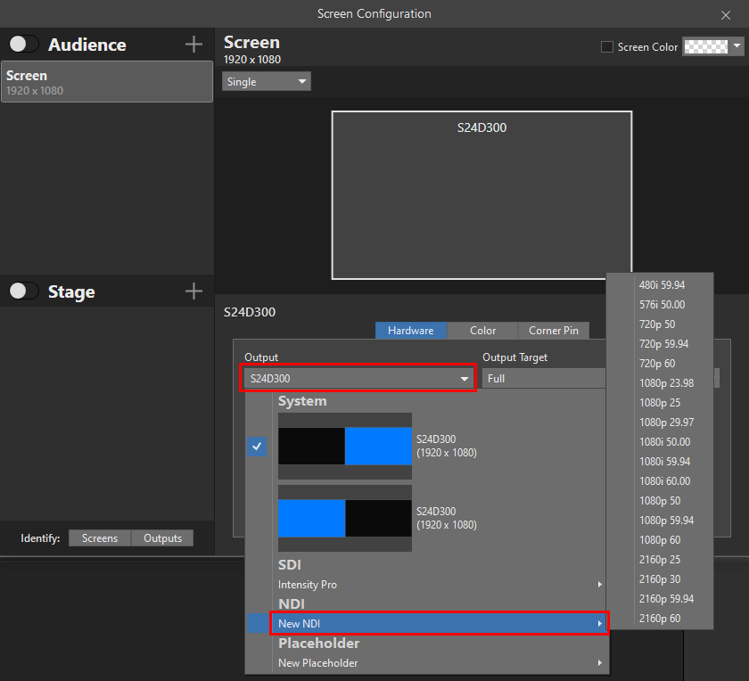
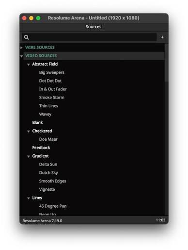
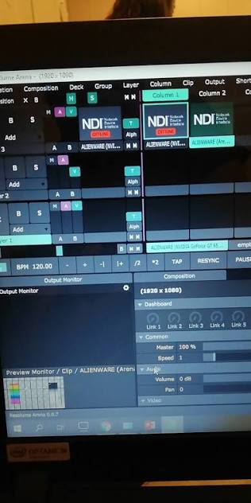
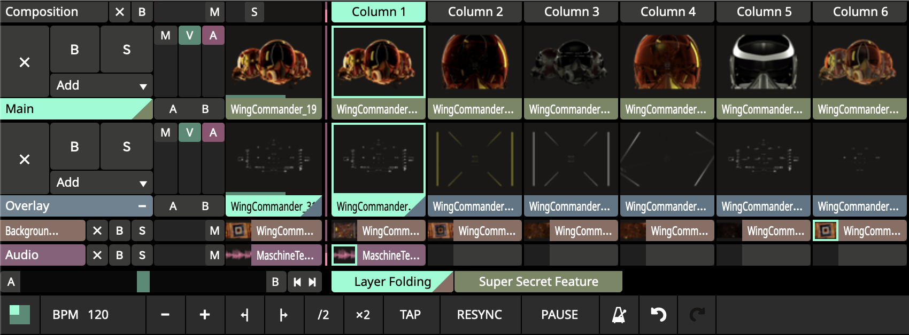
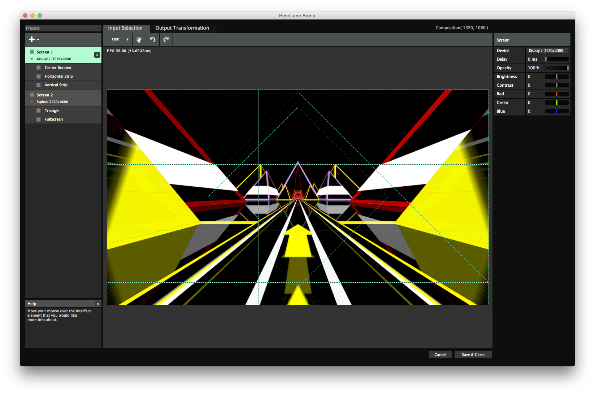

How is Resolume?
The core workflow — inputs, layers, and the everyday adjustments you'll make live. For the deeper hardware and patching details, see Chapter ③ — Advanced.
From ProPresenter
In ProPresenter, you're used to it being the source of lyrics and the teleprompter — it drives what the congregation and the stage see as text.
Resolume doesn't replace that. It handles media: slides, the live camera feed, videos, and images. Think of it as the layer that sits around and underneath what ProPresenter already produces.



Layering
Resolume composites video the way a graphics program composites images: in layers, stacked on top of each other.
- Layer (row) vs. column — layers can stack on top of one another; columns can't.
- Top to bottom priority — the layer on top wins, just like layers in any image editor.
- Composition vs. Group vs. Layer — a Composition is the whole stack sent to the screen; a Group bundles a few layers together so they can be moved, faded, or triggered as one unit; a Layer is the individual row playing a single clip at a time.
- Opacity — how much of a layer shows through the one(s) below it (more in Customizations).

Watch: Layer Structure — resolume.com/trainingSlicing
You don't have to use a whole input. Resolume can cut up any portion of it — for example, showing only the left half of a camera feed.
It can also resize: a 720×1080 source can be stretched or fit to 1920×1080, at the cost of some resolution. See Chapter ③ for advanced output patching and using ProPresenter's Live Feed as an input. Resolume's own Input Selection guide covers this in more depth.

Customizations
Once something is in Resolume, you can adjust it live:
- Speed — playback rate of a clip.
- Color — grading/correction on the fly.
- Opacity — covered above in Layering; more practical detail to come.
- Translation / Rotate — move and rotate content in frame.
- Playback options — loop, bounce, hold, etc.
- ...and a long list of other effects beyond this.
Shortcuts
Most of the customizations above can be triggered on demand rather than dug for in a menu mid-service — including via MIDI, if you want a physical controller mapped to specific adjustments.
Optimization
Heavy video files can strain playback and cause lag. Transcoding clips into a more playback-friendly format ahead of time keeps things smooth live.
Use Resolume Alley (Resolume's own transcoder) to convert clips before they go into a composition — this is the step that avoids lagginess.